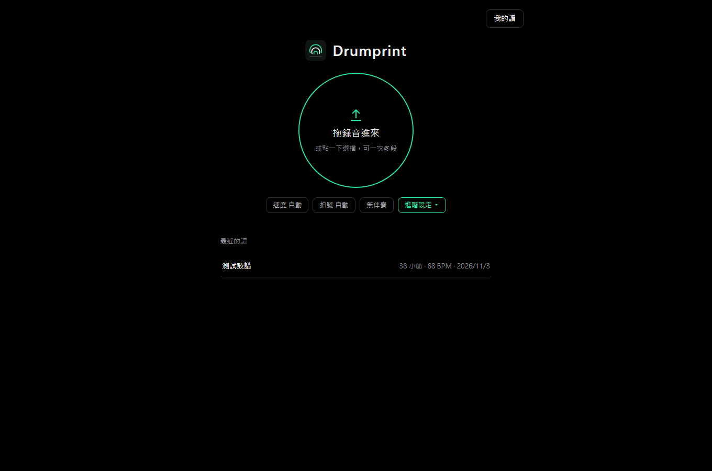
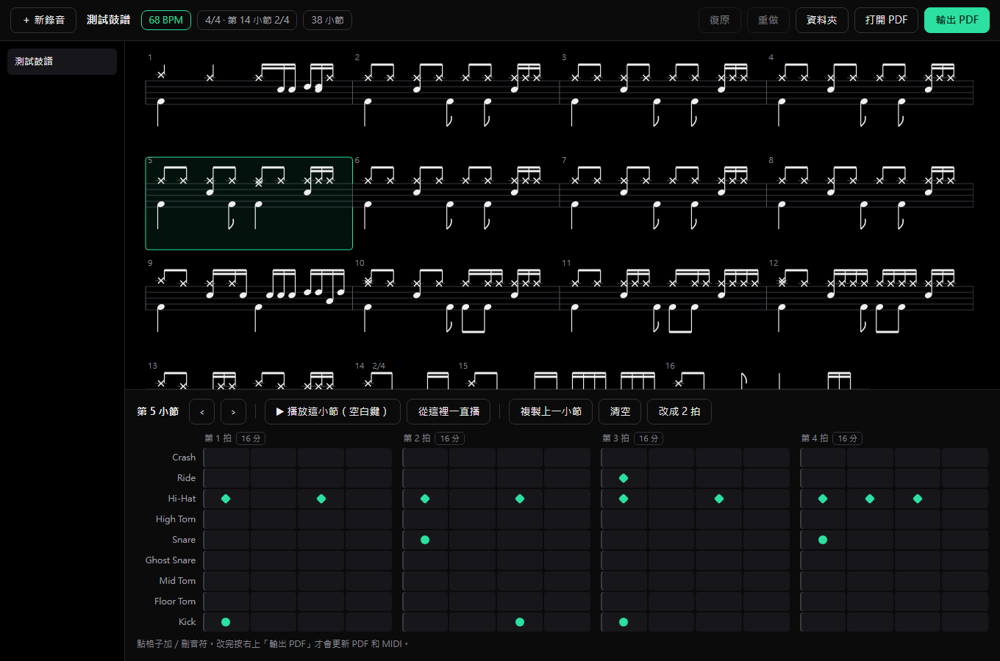
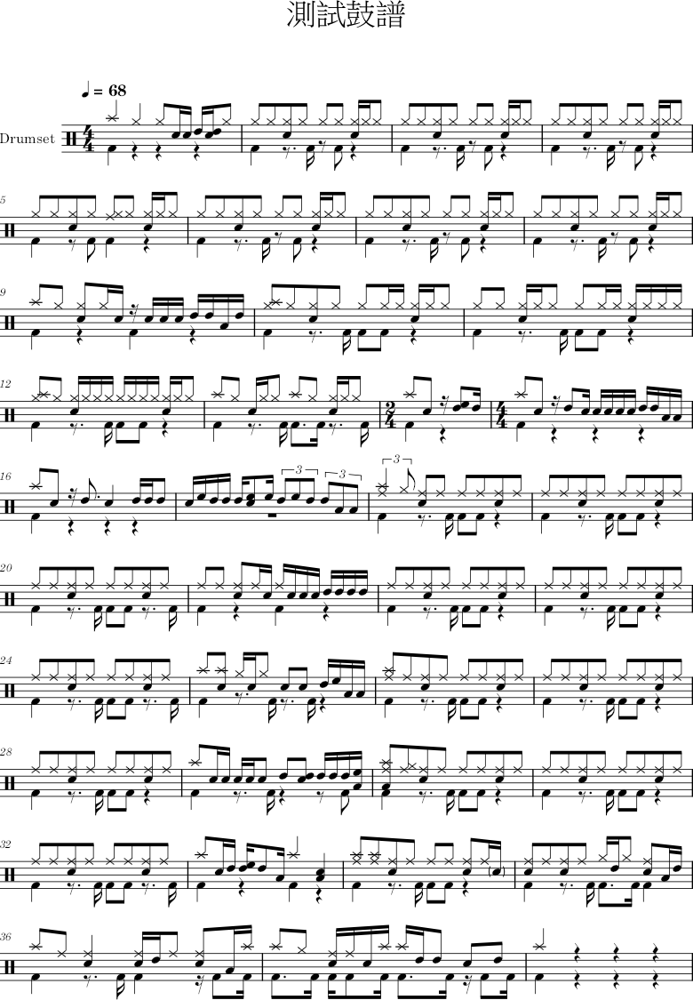

Drumprint
把你打的每一下，印成鼓譜。
電子鼓或練習錄音丟進來，自動轉成鼓譜；哪裡不對，點一下就能改，再輸出 PDF。
錄音檔→自動轉譜→看譜、改錯→PDF / MusicXML / MIDI
怎麼用
三個步驟，從錄音到能印的譜
1
拖錄音進來
把錄音拖進首頁的圓圈，或點一下選檔，一次可以放好幾段。速度、拍號預設自動判斷；錄音裡有伴奏時，打開「有伴奏」會先把鼓拆出來。
2
看譜、改錯
轉好後直接進譜面頁。點任何一個小節，下方就出現格子編輯器：點格子加或刪音符，可以播放原始錄音對照，改錯了能復原。
3
輸出 PDF
按右上「輸出 PDF」，用 MuseScore 排版成正式鼓譜，同時更新 MusicXML 和 MIDI。檔案放在每首歌自己的資料夾。
PDF 鼓譜標準鼓譜記法，可直接列印、上課用。
MusicXML可用 MuseScore 等打譜軟體打開繼續編輯。
鼓 MIDI可拖進編曲軟體，接鼓音源重播。
介面 ・ 首頁
打開就是一個圓：把錄音丟進去

- 拖放區：拖錄音進來或點一下選檔。支援 wav、mp3、m4a、flac、aif，可一次多段。
- 速度 ／ 拍號 ／ 伴奏：預設全自動，小標籤顯示目前設定。
- 進階設定：手動填速度、拍號（4/4、3/4）、第 1 拍在第幾秒。只有速度被抓成一半或兩倍時才需要填。
- 轉譜中：每段錄音一列，顯示做到哪一步，轉好自動打開譜面。
- 最近的譜：列出做過的譜，點一下就打開。
介面 ・ 譜面頁
上面看整首譜，下面改選中的小節

- 上方資訊列：歌名、速度、拍號、總小節數；有修改還沒輸出時會提醒。
- 右上按鈕：復原、重做、打開資料夾、打開 PDF、輸出 PDF。
- 左側清單：切換其他首歌。
- 整首譜：依視窗寬度每列排 2–6 小節，點小節就選取；播放時跟著亮。
- 格子編輯器：直排是鼓件，橫排是每拍的 16 分音符（或三連音）位置，綠點就是有打。
改錯
自動轉錯的地方，點幾下就修好
| 點格子 | 加上或刪掉一個音符。 |
| 「16 分」切換 | 每一拍可在 16 分音符和三連音之間切換。 |
| 播放這小節 | 播原始錄音的這一小節，邊聽邊對。「從這裡一直播」會往下播。 |
| 複製上一小節 | 重複的節奏型一鍵複製。 |
| 清空 | 整小節清掉重填。 |
| 改 2 拍 ／ 改回 4 拍 | 小節線抓錯時調整這一小節長度，後面自動重排。 |
| 輸出 PDF | 改完按這個，PDF、MusicXML、MIDI 一起更新。 |
快捷鍵
| Ctrl + Z | 復原 |
| Ctrl + Y | 重做 |
| ← → | 上一小節 ／ 下一小節 |
| 空白鍵 | 播放 ／ 停止這小節 |
編輯器裡的鼓件
CrashRideHi-HatHigh TomSnareGhost SnareMid TomFloor TomKick
成果
輸出的 PDF 長這樣

一段 38 小節、68 BPM 的練習錄音自動轉出來的第一頁，沒有人工修改。
- 上排符桿朝上是手：Hi-Hat、Ride、Crash（叉形符頭）、Snare、Tom。
- 下排符桿朝下是腳：Kick。
- 16 分音符、三連音、休止符、拍號變化（例如第 14 小節的 2/4）都會標出。
- 由 MuseScore 4 排版，可以直接列印。
每首歌的資料夾裡會有
| 歌名.pdf | 鼓譜 |
| 歌名.musicxml | 可再編輯的樂譜檔 |
| 歌名_鼓.mid | 鼓的 MIDI |
| score.json | 編輯紀錄，下次打開接著改 |
背後怎麼轉
兩套模型互相核對，再排成譜
拆出鼓有伴奏時先用 BS-RoFormer 把鼓聲分離（電子鼓直錄可跳過）
拆鼓件DrumSep 拆成 Kick、Snare、Tom、Hi-Hat、Ride、Crash 六軌
抓打點ADTOF 第二套模型同時判斷，不一致時用音量規則裁決
抓拍子Beat This! 找拍點與小節首拍，再用 Kick／Snare 位置校正
排成譜每拍選 16 分或三連音格線，自動判斷 2 拍小節
38 / 38
小節線位置全對
97 / 100
Kick 抓到的數量
52 / 52
Snare 抓到的數量
95%
手的部分（Hi-Hat、Ride、Crash）判對
測試曲：《挪威的森林》第 54–91 小節，Roland EAD10 實際錄音，對照正式鼓譜逐一比對。剩下的差異多數是演奏和原譜本來就不一樣。另一組公開鼓組資料集（MDB Drums）打點準確度 F 值 0.94。
環境與進度
現在能用的，和接下來要做的
系統需求（目前版本）
- Windows 10 ／ 11
- MuseScore 4（排版 PDF）
- 有 NVIDIA 顯示卡轉得比較快；沒有也能轉，只是比較慢
- 所有處理都在本機完成，錄音不會上傳到網路
進度
- 完成自動轉譜、譜面檢視、格子編輯、復原重做、重新輸出 PDF
- 完成拍號 4/4、3/4，以及中途的 2/4 小節
- 進行中一鍵安裝檔：裝了就能用
- 進行中Mac 版